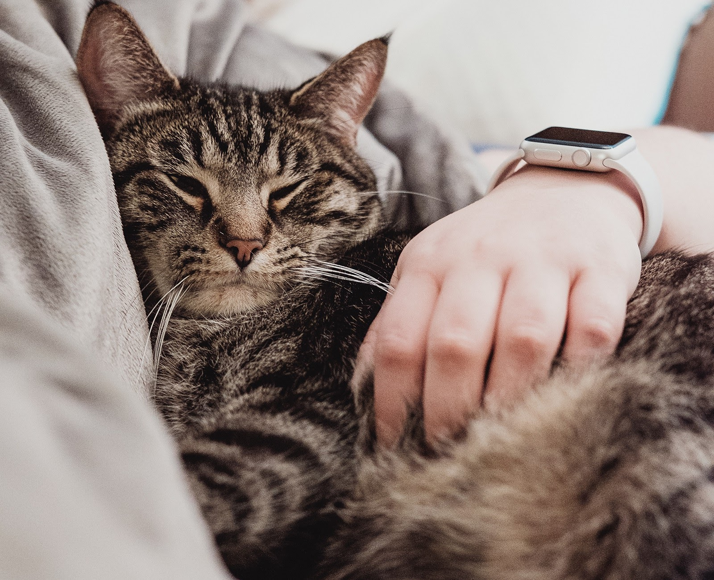
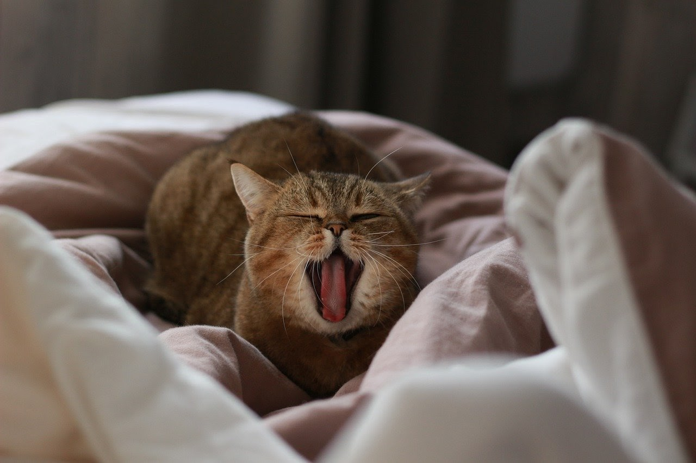
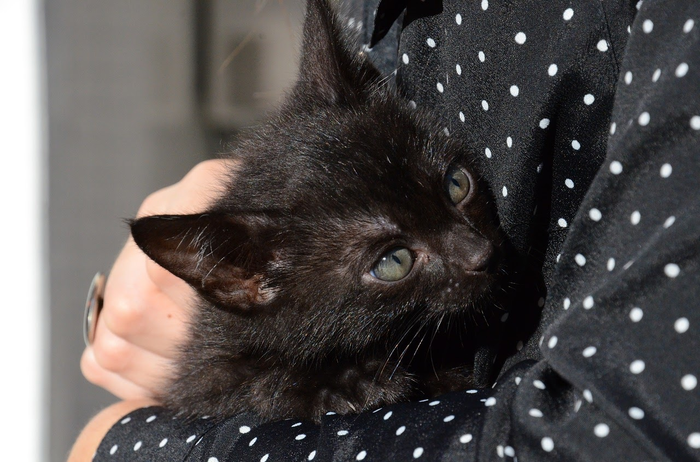
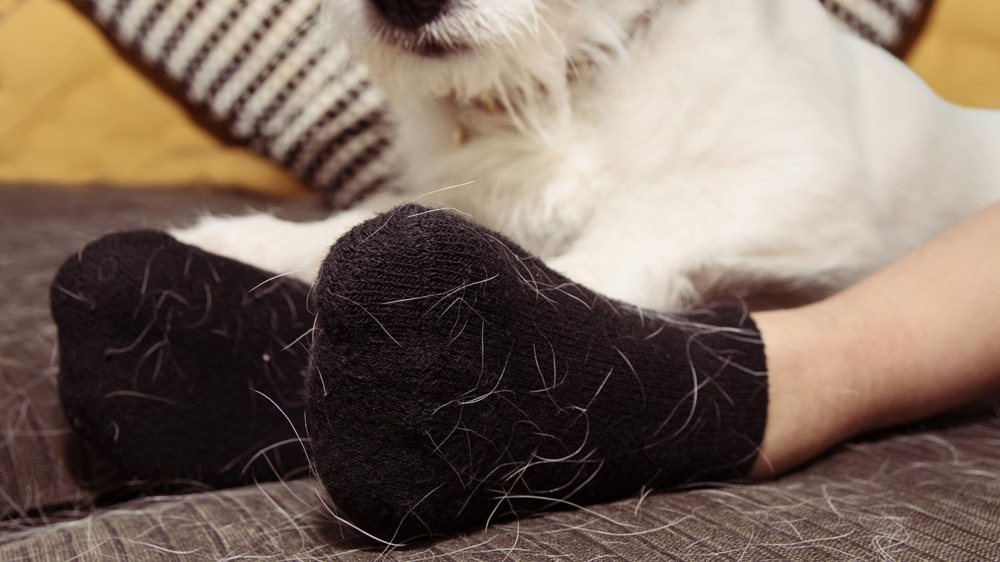
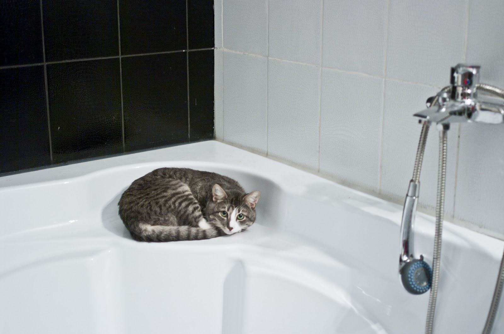

Những điều thú vị mà chỉ người nuôi mèo mới hiểu được
Những người không nuôi mèo thường nghĩ rằng việc nuôi chúng rất đơn giản. Nhưng chỉ có người trong cuộc mới biết rõ rằng khi nuôi mèo sẽ có những việc mà người ngoài không bao giờ hiểu được. Cùng Mini Pet khám phá những bí mật này nhé!
1. 95% thời gian dành cho việc ngủ
Một bí mật mà những người yêu mèo mới biết chính thời gian ngủ của những chú mèo vô cùng nhiều. Bạn có thể bắt gặp chúng ngủ ở khắp mọi nơi như cầu thang, góc tủ, hay thậm chí là cả trên sàn nhà,... với vô vàn tư thế độc lạ đó.
2. 3 giờ sáng là giờ vui chơi
Những chú mèo thường có thời gian vui chơi khá khác thường chẳng hạn như 3h sáng. Đây là khoảng thời gian để chú mèo để chạy vòng quanh nhà, nhảy nhót trên các đồ nội thất và leo trèo trên các màn cửa.
3. Mèo thích được vuốt ve
Vuốt ve mèo là kỹ năng mà rất nhiều người thiếu sót. Mèo rất thích được vuốt ve, nhưng không phải là một vài lần vào một số nơi và quá lâu. Bạn hiểu ý của tôi chứ?
4. Mèo thích được vuốt ve
Hãy chú ý, không có một nơi nào hoàn toàn không có lông mèo. Nếu bạn không thể sống chung với lông mèo, hãy chủ động loại bỏ lông chết đã rụng trên cơ thể mèo mỗi ngày bằng lược chải lông chuyên dụng cho mèo. Hiệu quả của phương pháp này luôn được người nuôi mèo xem như bảo bối đấy nhé. Thế nên, đừng lo về chuyện rụng lông nữa nhé.
5. Mèo không hề có khái niệm riêng tư
Đó là sự thật. Có rất nhiều trường hợp khiến người nuôi mèo thấy thật “bất lực” khi chú mèo viếng thăm bạn vào những lúc bạn đang tắm hoặc đang giải quyết nỗi buồn và đương nhiên chúng hầu như chẳng bao giờ thấy ngại ngùng vì hành động này.
Có lẽ một số điều trên đôi khi sẽ làm bạn phẫn nộ nhưng cuối cùng sự có mặt của mèo cưng luôn khiến chúng ta vui vẻ đúng không nào. Tuy cũng có những lúc hơi phiền phức nhưng Mini Pet tin rằng có một người bạn 4 chân nhỏ bé chắc chắn sẽ giúp cho ngôi nhà của bạn ấm áp hơn rất nhiều đó.